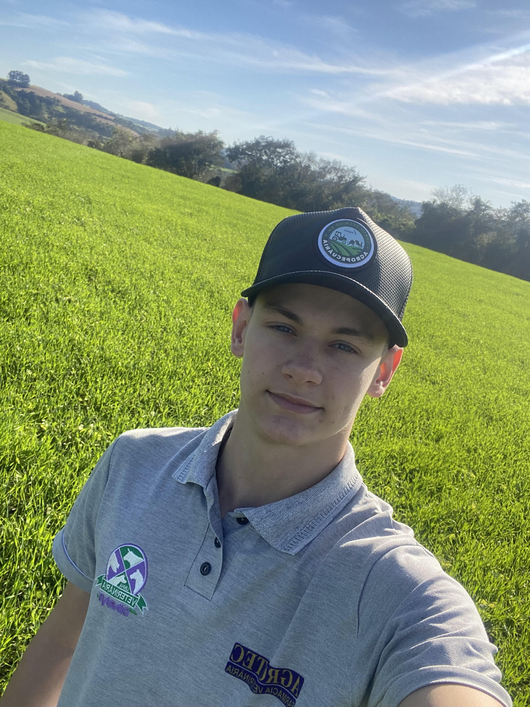

Oportunidades de Estágio
Sobre nosso site
Sobre o nosso site
O nosso site tem como objetivo principal fazer uma ligação entre estagiário e empresa. Onde o estagiário irá fornecer as suas formaçoẽs acadêmicas e a área em que deseja atuar para atribuir experiências de trabalho em seu curriculo.
Já a empresa, pode utilizar este espaço para procurar aspirantes a vagas de estágio, além de divulgar postos de trabalho que surgem instantaneamente, aproveitando a agilidade da internet, para divulgação em todo o território nacional.
Estagiário

Diogo Henrique Dal Castel
17 Anos
Terminando Tecnico em Agropecuaria
Fone (42)9 98472542
Empresa

Brevant Sementes
Engenheiro Agrônomo e Tecnico em Agropecuária
Atua na área de venda de semente de milho
Fone:(00)0 0000 0000